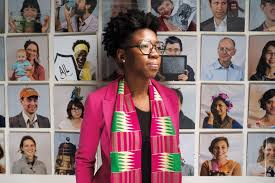

Dr. Joy Buolamwini
About Dr. Buolamwini
Joy Buolamwini was born in Edmonton, Alberta, Canada in 1989 but grew up in the US. Both of her parents were from a Ghanaian background. Dr. Joy is currently a computer scientist and researcher known for studying bias in AI. She attended Georgia Institute of Technology, where she earned a degree in computer science.
Buolamwini is considered underrepresented in the technology and AI fields because she is a Black woman working in an industry dominated by white men. While working on facial recognition systems at MIT, she discovered that some systems could not recognize her face because of her darker skin tone. She used a white mask to expose this racial bias, and the system instantly recognized her only when she wore it. This moment launched her research into what she calls the "coded gaze."
Her study showed AI systems had an error rate of over 20 to 34% for darker-skinned women, compared to less than 1% for lighter-skinned men. Despite facing resistance from the tech industry, she turned her research into a global movement for fairness in technology.

Why Her Contributions Matter

Most notably, Dr. Buolamwini founded the Algorithmic Justice League, an organization fighting algorithmic bias in AI. This led to people calling her the "conscience of the AI revolution." Through the AJL, she exposed racial and gender bias in AI, influenced government policy to limit facial recognition sales, and argued that AI systems should be harm-tested before release.
Her Gender Shades project revealed that error rates for darker-skinned individuals were as high as 34.7%, compared to only 0.8% for lighter-skinned individuals. This changed the standard for how AI is tested and caused major companies like Microsoft and Amazon to improve their facial analysis software.
Dr. Buolamwini also published the national bestseller Unmasking AI and starred in the documentary Coded Bias. Her book helped shift AI policy and was cited in court hearings. The documentary pressured companies to re-evaluate their systems, with some even stopping the sale of facial recognition technology to police. Watch a clip here: Coded Bias Trailer.
Layout by Bootstrap.